CMSC216 Exit Survey Results
Table of Contents
Summary Statistics for Multiple Choice Questions
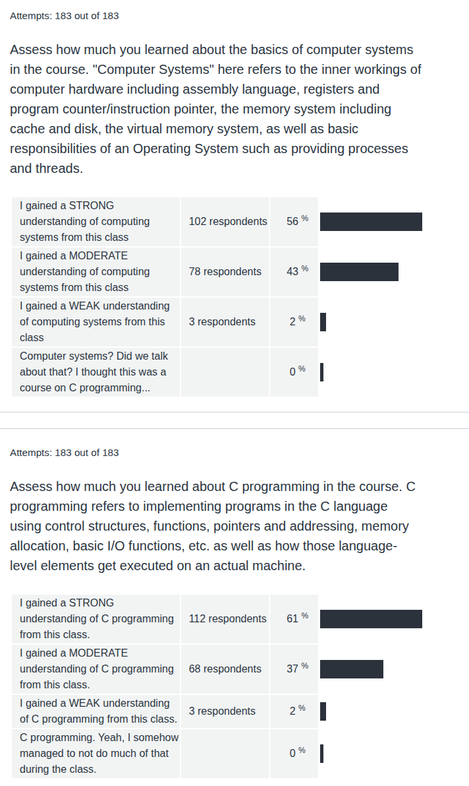
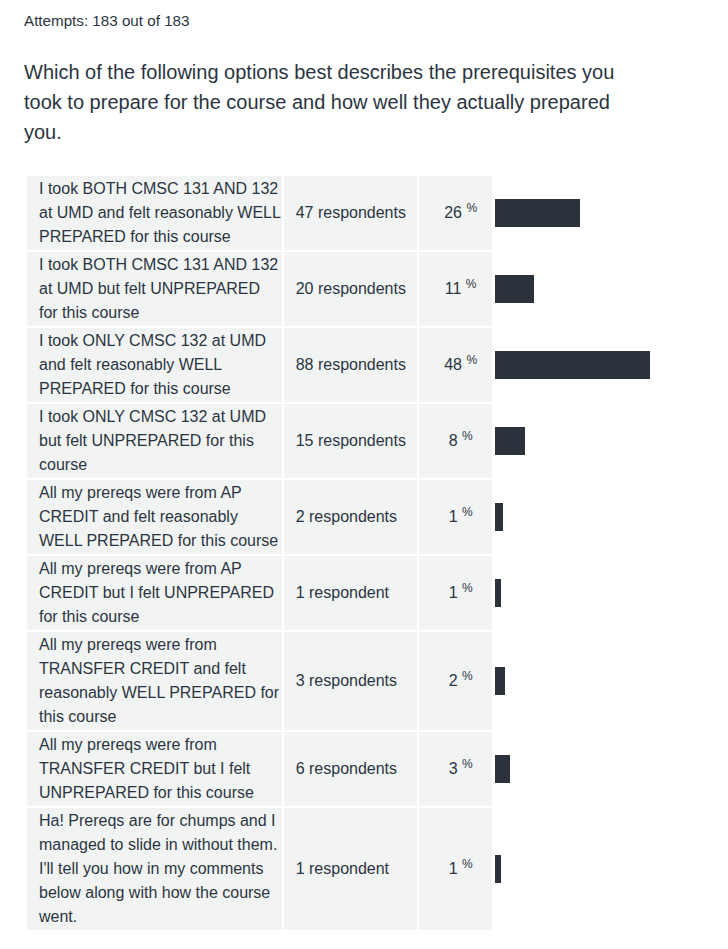
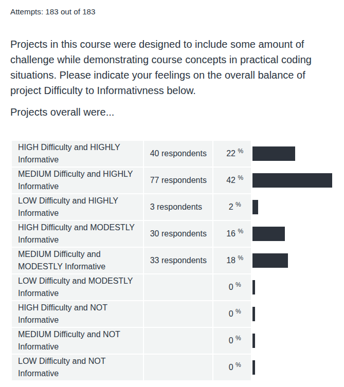
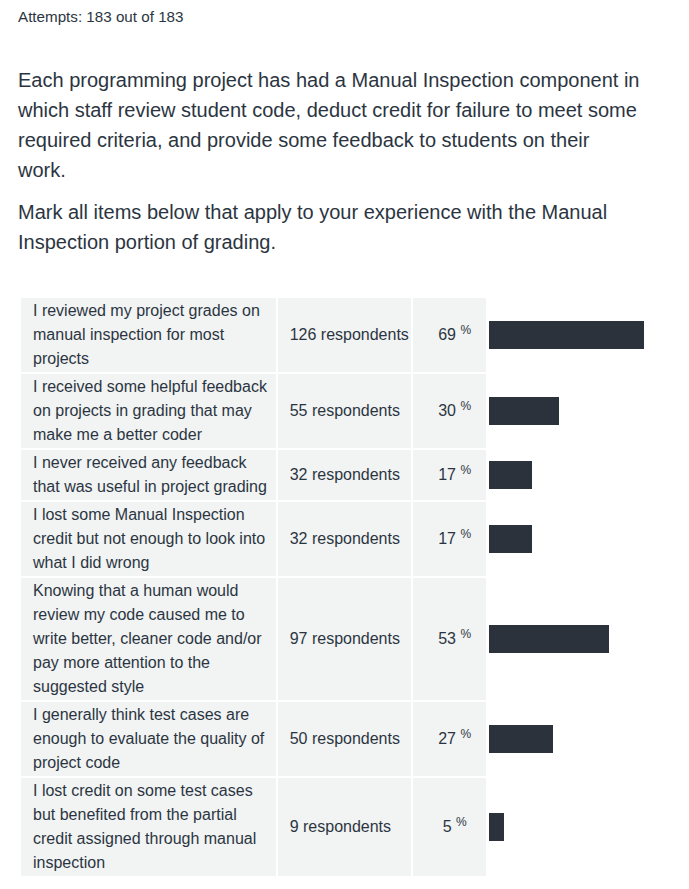
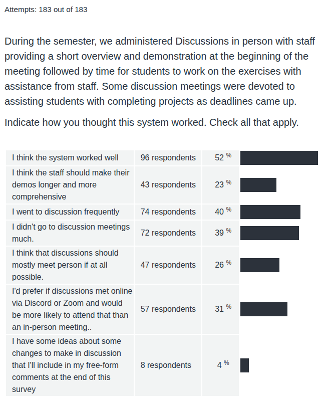
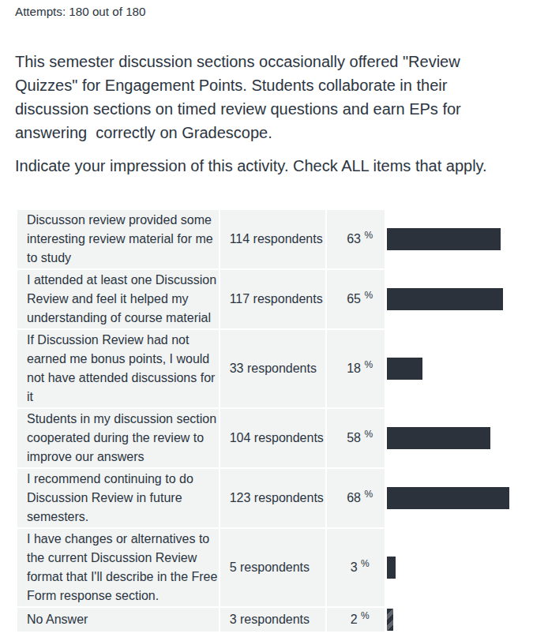
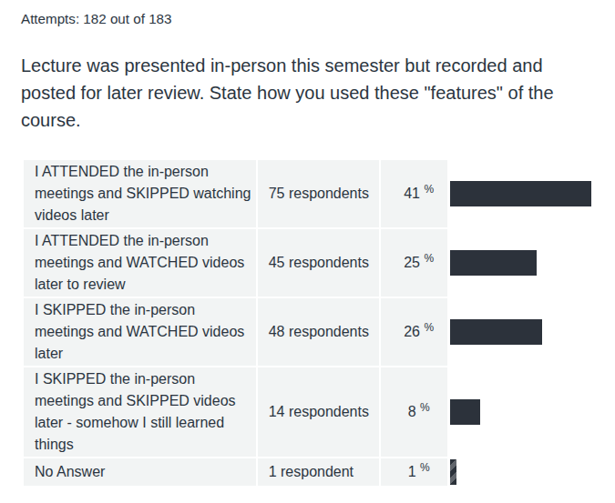
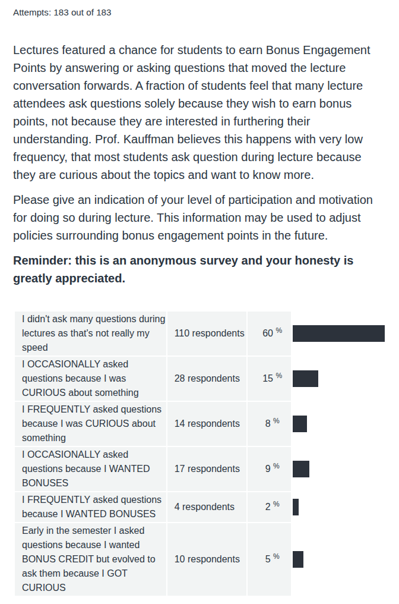
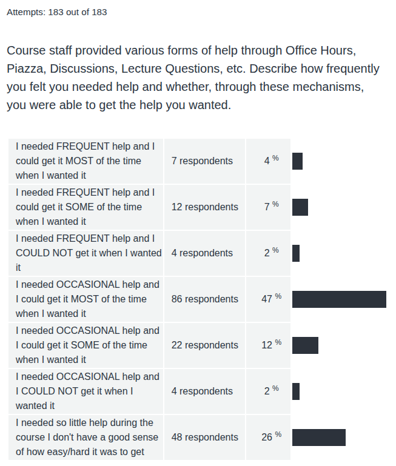
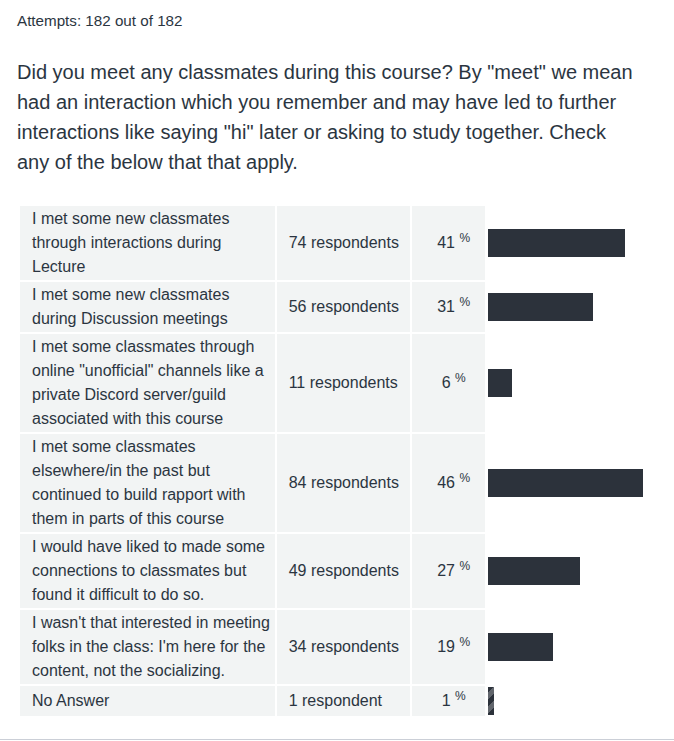
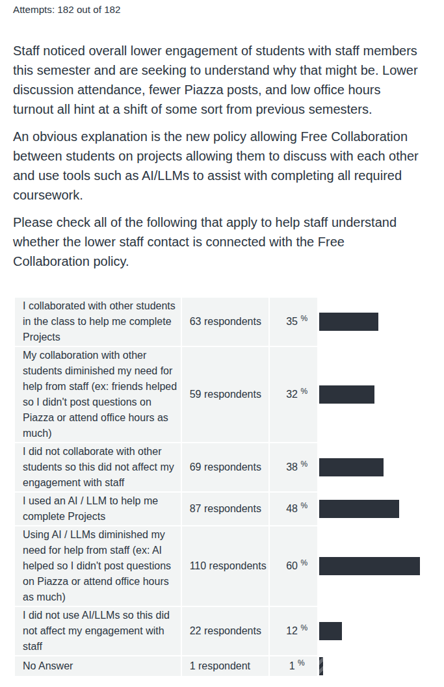
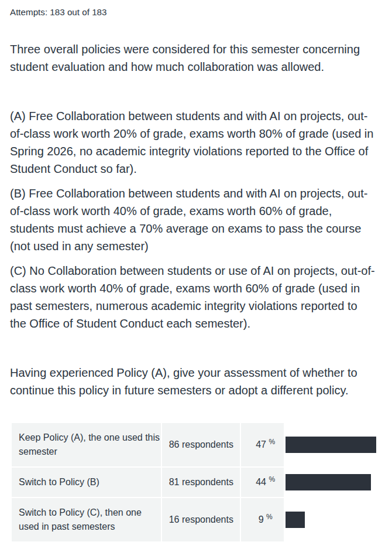
This last statistic is fascinating since it conflicts with the preferences between (A) and (B) expressed by your Fall 2025 peers: they indicated a strong preference for [Policy A / Scheme 2] as shown in the feedback below.
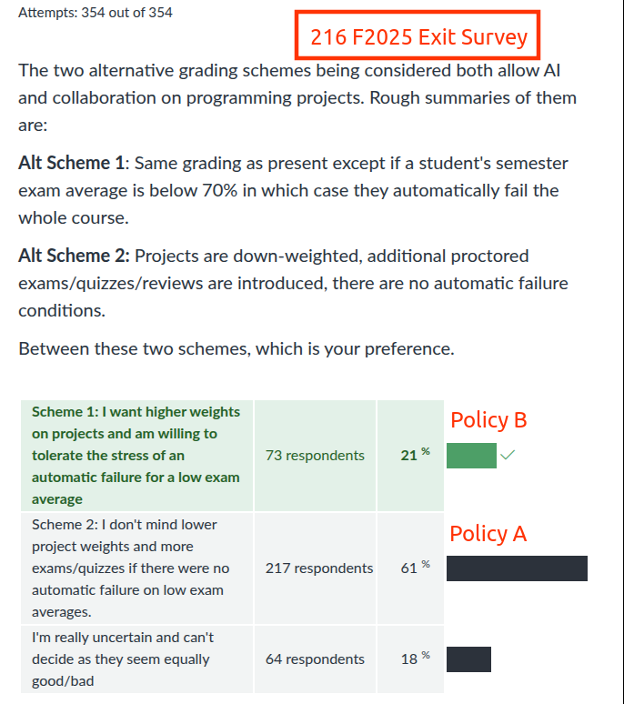
After students in Spring 2026 have actually experienced [Policy A / Scheme 2] with a high exam weight, they seem less certain and more open to [Policy B / Scheme 1] with its lower exam weight but provision for automatic failure. We'll consider this going forward.
Discussion Attendance and Policies
A free form question prompted students for their thoughts on Discussion attendance:
Staff noticed that fewer students than usual went to discussions this semester. Briefly, answer the following:
- (A) If you did not attend discussion often, why not?
- (B) Would anything in particular encourage you to attend Discussion sections more frequently?
Below are summaries of responses from students on this question.
Frequent Responses on Discussion Attendance
| Count | Comment |
|---|---|
| 65 | More bonus / engagement points or required quizzes would encourage me to go |
| 40 | My section met too early for me to attend; I would go more often if I was in a later section |
| 22 | I can do discussion activities on my own; self-study + AI was just as effective as attending |
| 19 | More paper worksheets / coding exercises / exam practice problems would encourage me to attend |
| 16 | I benefited and learned from discussion when I did attend |
| 11 | I had logistic issues to made it hard to attend (class before/after across campus / long commute) |
| 10 | Review lecture material / give conceptual overview of labs |
| 9 | Attended discussion frequently at the beginning, less so by the end |
| 7 | Zoom /Online discussion would be better and encourage me to attend |
| 5 | Cover projects in more detail during discussions and I'll come more |
Notable Responses on Discussion Attendance
- Discussions should focus more on aspects of the course that Google can't help with. Idk what those are.
- I think discussions would be a lot more useful if we were given on-paper coding tasks that helps us apply of what we learned in lecture, and this would also help us prepare for exams.
- There would be times where one TA would just spend the discussion just drawing diagrams on the whiteboard explaining concepts we should know for the labs/concepts covered in discussion which I felt was significantly more useful than me just sitting there to be given time to do my lab.
- If we had snacks that would be cool.
- I think having more bonus reviews that don't just happen before tests would encourage people to come because people actually collaborate and engage in class when we have bonus reviews.
- I think I would be more enticed to attend discussion if on the more boring days we instead went over the projects because those were so freaking difficult.
- To encourage attendance for discussion, it might make sense to record discussions.
- My discussion section was early in the morning and I often felt that I'd just prefer to sleep in rather than wake up early to attend it. 11am discussion section
- The only thing that would've made me go this semester is if they were required for a grade. Please do not do this though, being optional is good for the people who don't need them.
- I'm glad that the Discussion sections offered me a space to ask questions and work on the labs. I wouldn't want anything about them to really change.
- It doesn't make sense to go to discussion if you have an AI that's able to walk you through topics and for you to be able to understand what the AI is saying. It's basically a more personalized tutor that explains to just you and can help you understand the topic.
- I can understand why people chose not to attend discussions. If you understood the labs (or used AI for them), there was little need to attend most discussion sections as they mostly just went over the lab.
- I would think that people went to discussion less because of the open work policy as it was less needed get help from TAs or instructors.
- I found that [discussion] was mainly helpful in the "unplanned" portions where it was TAs giving us CS advice that wasn't necessarily part of the curriculum, just good advice. The actual content covered in discussions wasnt super helpful to me as I was typically behind in understanding the material and needed to go back and review before the material would be helpful to me.
- The more evil thing would be to have information in discussions that aren't recorded or in lectures, that would make me attend more, but also hate the class.
- In the beginning, I skipped discussions a lot because they wouldn't contribute for credit, but when I began falling behind I attended them more often and asked questions for engagement points. However, asking them genuinely helped me as well, so I began asking them both for engagement points and knowledge of the material.
- I didn't attend many discussions because I believed I could just do the labs myself later and there was no point in going. But I highly regret not going as I know it would've helped me understand course content better
- Maybe Im just spoiled from herman's worksheets, but I always learned significantly better with those. Even just having to answer homework questions on hand, and have them distributed during discussion and have me spend my discussion section doing that would have been nice.
These are all interesting and useful as we seek to reform and improve discussion sections. There is clearly a need for more incentives to go to discussion with the obvious being some form of bonus or required credit. Unfortunately course staff do not set the meeting times so the early discussion sections are likely to remain early.
Freeform Feedback
Frequent Items in Freeform Feedback
| Count | Comment |
|---|---|
| Miscellaneous | |
| 30 | Good course / enjoyed it / well structured / would recommend |
| 3 | Lab quiz failures should say which question was wrong |
| 5 | Projects were so much work for so little credit |
| Exams | |
| 6 | Practice Exams too short / too easy compared to actual Exams |
| 2 | Liked having open resource exams |
| 4 | Exam questions were vague or ambiguous |
Props to Staff Members
A number of staff members were individually thanked by students in their free-form feedback for help during the semester.
| Member | Thank-yous |
|---|---|
| Abdullah | 6 |
| Anh | 4 |
| Ayushi | 3 |
| CJ | 8 |
| Clara | 5 |
| Emily | 6 |
| Jeffrey | 2 |
| Lasha | 4 |
| Rohan | 7 |
| All TAs | 1 |
Notable Freeform Responses
Student comments are given in plain face.
Instructor responses are italicized.
Lecture
I like that questions are encouraged during lecture.
Dialogues are more informative than broadcasts. Glad that style worked for you.
- the class is boring because ppl clearly only ask quesitons for engagement points, so they end up being useless questions that kinda waste time IMO.
Also too many people asked questions in lecture.
I encourage everyone to tone down their criticism of questions from other students. I rarely hear questions that are not worth asking and to put it bluntly, I know better than all of you about these things. Listen to what others ask and you'll understand both the technical content and the people involved better. Also consider: do you want others to render judgment on you for your questions? Do you want me to render judgment because you don't have any questions? If the answer to either of those is "no", then back off your critique and practice more patience.
After every couple of slides we would spend 10 minutes answering questions that were sometimes only somewhat related, and ultimately incentivized me to stop attending in person lectures and watching videos so I could skip past the Q&A sections.
Glad you found a way to survey lecture content that worked for you. Pay mind to my previous comments, though.
Projects
There are also a lot of typos in projects, slides, etc.
Email me about them. Reporting mistakes to improve the course for all is worth engagement points.
Only thing that I have a gripe about is I lost points on a lot of projects due to "No/extremely poor commenting" even though I comment a decent… I still don't know why these points were really taken off, but more specific feedback regarding stylistic point deductions would help for the future.
Style is a judgment call and I'm sorry that the rationale behind the deductions was not explained to you in sufficient detail. Regrade requests for style are fine but it is a bit late now. Come see me some time if you want to talk about commenting and style generally as it's good to prepare to meet style guidelines at employers that will have their own hot take on the subject.
I really liked how helpful the projects were. The exam coding made so much sense with the help of projects.
That is the intent: do the projects, own the projects, explain the projects to your stuffed duck, and that is the lion's share of exam prep. Glad it worked for you.
The projects felt so overcomplicated and long for what we were learning. Sometimes, I would struggle for so long on a project and think my understanding of the content was so little, but then I would do great on the coming test.
I'm not sure whether this is a complaint or a compliment. If you struggled on projects, good. That means you were learning. If something is easy for you, you aren't growing. That's true whether it's lifting heavy objects, playing a piece of music, performing a dance, or constructing a compelling story. If it's easy, you aren't learning and you aren't growing. Exams were there to check if you learned anything after practicing a while. From your comment, it seems like the projects and the exams had the desired effect: struggle, grow, demonstrate. Keep that in mind going forward: if coursework doesn't challenge you, challenge yourself.
Students will use AI on the projects regardless of the policy. To ensure that it does not compromise with their learning, the exams should be structured so that they are heavily reliant on what the projects teach.
I believe that's what we did as all exams had at least one with a project extension question or a question directly analogous to exam questions. If you don't think we hit the mark, let me know why.
GOD PLEASE MAKE THE COURSE MORE ORGANIZED, IT IS SO ANXIETY INDUCING WHEN I DONT KNOW IF IM EVEN DOING THE ASSIGNMENT REMOTELY CORRECTLY BECAUSE IT CHANGES AFTER BEING ASSIGNED LITERALLY EVERY TIME.
First, as I came of age amid early internet culture, it is extremely RUDE to use all caps. That's the electronic equivalent to screaming in someone's face. It's a great way to have your messages deleted so if you don't want that to happen, be more civil.
Second, you seem miffed about assignments update to correct mistakes after release. Here are update counts on our 5 projects according to the Changelog on each:
Changelog P# Entries P1 2 P2 0 P3 1 P4 0 P5 1 While it's not perfect, it's quite a bit fewer than past semesters and most were minor fixes that could be resolved via
make update. What changes were so upsetting to you? If you can explain more, perhaps we can ease the update process for future students.Third, and final, if you felt the course were disorganized, describe how. It is easy to feel critical and say that something is of poor quality. It is quite another matter to describe exactly what aspects fall short and provide an alternative. Every assignment had descriptions, automated tests, and staff support. Your expectations for organization are going to need to lower somewhat and grow in flexibility if you hope to make it at as a working engineer; that entire job is to manage uncertainty and risk and try to solve technical problems based on vague ideas clients or managers have. If the level of uncertainty in the course was problematic for you, you're in for a world of hurt as you'd enter the professional realm. Rest assured as well that you'll need to practice formulating specific criticisms in engineering disciplines if you expect others to take your comments seriously, so practice that now: email me about what parts of the course were so distressing as to merit your above response.
I also think debugging with gdb should not have been as major part of course work as it actually was.
Writing codes is writing bugs. Making code work is debugging it. Debuggers are essential tool. I frankly don't care if you don't believe me now as if you stay in the computing business, the business will beat that lesson into you without my needing to lift a finger. I've tried my best to prepare you and warn you about how useful debuggers are for debugging but, if you need some more time to learn that lesson, just wait.
Assembly!
- Assembly is cool I don't get why people hate it so much.
- Assembly shouldn't exist.
- Boo to the assembly haters. It rules. It helped me get deeper into Gameboy hacking and z80. (My age is showing.)
- Finally, Programming in Assembly was… definitely interesting, to say the least. Kinda fun sometimes.
- I would only wish assembly coding only on the most vile human beings.
- I may be the only one, but I actually really enjoyed learning and programming in Assembly.
- i hate assembly so much god
- ASM is brutal but I feel like there's no way to change that: it's just the nature of the language.
- Assembly programming isn't bad at all.
- I quite liked assembly.
- I really liked the assembly language portion and was surprised by my actual interest in it.
- I personally enjoyed the assembly programming far more than the c programming.
Assembly programming needs to be part of any computer science major. A proper study of computing includes the fundamental nature of the machine we base all our other work on. You may love it, hate it, want to dig into it more, or avoid it like the plague. Such sentiments are akin to "liking gravity" or "hating electromagnetism": they are sentiments toward fundamental forces that are inescapable. Acknowledging that machine languages are beneath the C and everything else will resolve many mysteries in computing and that is why we study it.
Puzzling
- hated puzzlebox
- Absolutely hair tearing on that puzzlebin. Spent so long and just to realize it's just the Collatz again.
- I think there is a clear distinction between having something be challenging and having something be miserable and puzzlebin was definitely miserable.
- Oh my god, project 3 puzzle bin was incredibly incredibly incredibly incredibly difficult.
- some projects were evil (PROJECT 3 PUZZLEBIN)
- I really hated puzzlebin for most of the phases but after raging over phase05(i think) something literally just clicked and I UNDERSTOOD all of it. Amazing experience 10/10 would do again
You don't have to love pushups, but doing them will make your body stronger. You don't have to love puzzlebin, but doing it will low-level debugging stronger and improve your mental model of assembly.
Labs / HWs
Text questions should tell you which one is wrong on labs
I'll think about it. Folks complain about this every semester as they sometimes get stuck but usually 5min with a staff member is all it takes to identify the question where a misconception is present. That's never seemed too much to ask.
In some scenarios, I feel like [labs] helped me with understanding even more than the projects or practice exams.
Glad to hear it. Variety is the spice of life and the spice of courses. It's a fairly standard pedagogical scheme: small, focused assignments to teach specific skills, larger assignments that combine skills, evaluative assignments that measure mastery of skills.
Exams
There should be a lot more practice material as well as more transparency on topics on exams like a topic list. Even though one may study as much as they can for a class like this, there are still curveballs thrown in exams which make it seem like content was missed. If this is a misconception I am expressing, post exam review lectures can rectify this to show how each question was fair.
I contend this is a misconception. If you'd like to identify the "curveballs" you mentioned, we can discuss them. I've had a number of students debrief exams in the present and past semesters and ask how they could have prepared for a particular exam question. I usually respond "how did you do that on project X / lab Y?" After looking at me quizzically, they pull up the assignment in question and discover that it is a highly correlated question and are quite surprised. Some even express "I didn't think the project stuff would come up on the exam." Perhaps that's been the case in their past classes, but not here.
We are too to tight on time to spend a whole lecture reviewing an exam. If you want to review our exam to get feedback, come to office hours. I expect that will be the case in your future classes as well so keep it in mind should you want feedback.
Some people just don't test well or could be having an off day, and having exams weighted so heavily will probably drag the average down
I've though a lot about this, the "one bad day" phenomenon, and whether the course needs a repair mechanism for it. On average, the answer seems to be "no": some form of 'A' was the most frequently awarded grade in the course. That is small comfort to folks who felt like they got crushed on one exam so missed their target grade. I'll continue to ponder how we might address this.
Policies
- I support student-student collaboration but am against AI collaboration on projects. Not to say I didn't use it from time to time on particularly challenging problems, but I think that generally it is bad for students and makes it much easier for them to skate by without learning actual skill.
- Please keep policy A… exam heavy taking from projects in class, so you had to know how the projects was done in order to get a good grade on the exams, I believe it would enhance my learning greatly.
- The weight on exams is quite reasonable since it forces students to actually understand projects, even if they use AI for the entire thing.
- I wish there were other assignments to account for our grade as 80% of our grade being determined by exams is daunting.
- Since there was so much out-of-class work, even though we were allowed free collaboration and AI, it should still be worth more than 20%.
I feel like a doubling [project weight] from 2% to 4% per project would make each one feel more substantial and students would be more willing to understand and complete them.
This was the first semester that I allowed Free Collaboration and it has been very interesting to see how it has affected student behavior and grades. General observations so far are:
- Overall grades are largely unchanged from past semesters
- Student engagement at office hours, discussion sections, and Piazza is way down.
I'll be studying and quantifying the data we collected over the summer to determine further adjustments to make. I'm just happy that we didn't go off the rails.
- Open collaboration and AI was super useful and I think it helped me learn a ton as well
- As someone who is more shy and feels anxious about going to office hours or asking the TAs for help, it was really nice that I could use my friends for help instead of having to feel stuck.
- I think AI usage is good. I believe that many times I can't go to office hours (I am a commuter), so AI can step in and help me answer questions, review, and debug.
If a question can be answered accurately with a good online source, it has made me ask all my questions to AI instead of asking the staff.
Hearing about how students use and perceive AI has been fascinating. I'm heartened to hear that it provides folks with benefits and conveniences. Just don't neglect developing your ability to interact with other people: that is a far more crucial skill than programming or prompting.
Switch back to the original policy [(C)], and ban AI usage. Frankly, it was a skill issue on the part of those who got caught, and yet I pay the price.
No. I spent about 60 hours between November 2025 and April 2026 studying evidence, assembling documentation, emailing students with problematic work, and attending Office of Student Conduct disciplinary hearings. Those hours spent as policeman/lawyer was time that I could not spend making YOUR class better. It's entertaining sometimes to wear different hats, but I chose teaching as a profession and have limits with respect to policing. There are too many students that now use AI irrespective of what my policies might be; they will lie afterwards about it making it much more time-consuming to prove they broke rules. It's an intractable problem to resolve and the truly "skill" decision is just to work around it. Use AI, don't use AI; I don't care. Just make sure you are learning and ready to take an exam to prove it. If you are upset that you have to "pay the price" then convince your peers to follow the rules and be more honest. Best of luck to you on that.
The Far Side
One thing I found somewhat odd is that I told people I didn't use any AI on projects and some people thought that was weird and questioned whether it was really a good idea for me to not use AI…?
That happened to me too. It's a very good idea for you to keep thinking for yourself rather than offloading your thinking to a bot. Don't let anyone convince you otherwise. When folks look back 15 years from now at this era, it will be fascinating to see that there was such a push by the people selling AI to get folks to use AI and become dependent on it, that they sold AI for free or cheap then started cranking up the price once investor money dried up, just like a drug dealer would give free samples to get kids hooked. Try not to get addicted and keep refining that lump of gray matter that sets us apart from all the other creatures on this earth.
I just think that Unit 3 was a bit cooked with the timing, but I understand Kauffman was sick and this is the first time doing it.
What was "Unit 3"? When was I sick? What were we doing for the first time? I hope you're not using drugs or alcohol while filling in your course survey, because that's illegal in 27 states including Maryland.
Create a Discord or GroupMe with the TAs as moderators. Slack is also another option that one of my other classes uses. A student created a GroupMe but he was the only person running it. I felt that the group chat was dead compared to a platform like Piazza.
Huh? If Piazza was more lively than the GroupMe, that is sad as Piazza was deee-ead compared to previous semesters. I'd chalk it up as another AI casualty.
I would also always use the low level UNIX file handing systems called instead of the C level methods.
I eagerly await how you plan to print
float f = 1.234;usingwrite(). Get back to me when you figure that out or give up.I didnt understand the 3rd part of teh semester tho. Seemed a little useless
Ever notice how people generally think things they don't understand are useless? And then when they do come to understand those things, they find them useful? Maybe try that.
Sans Undertale project 3 will haunt me forever… perhaps there is a hidden
.cheater_cheater_pumpkin_eaterfile in my brain I need torm -rfIf you know, you know, and this one knows. When you see a function named
dont_run_me(), walk away.⠀⠀⠀⠀⠀⠀⠀⠀⠀⠀⣀⣀⣶⣶⣶⣶⣶⣶⣆⣀⡀⠀⠀⠀⠀⠀⠀⠀⠀⠀ ⠀⠀⠀⠀⠀⠀⠀⢀⣴⣿⣿⣿⣿⣿⣿⣿⣿⣿⣿⣿⣿⣷⣄⠀⠀⠀⠀⠀⠀⠀ ⠀⠀⠀⠀⠀⠀⠀⣾⣿⣿⣿⣿⣿⣿⣿⣿⣿⣿⣿⣿⣿⣿⣿⡆⠀⠀⠀⠀⠀⠀ ⠀⠀⠀⠀⠀⠀⠀⣿⠋⠁⠀⣀⠀⢹⣿⣿⣿⠀⢀⡀⠀⠉⢻⡇⠀⠀⠀⠀⠀⠀ ⠀⠀⠀⠀⠀⠀⠀⢹⣆⡀⠀⠉⠀⣾⡟⠙⣿⡄⠈⠁⠀⣀⣾⠁⠀⠀⠀⠀⠀⠀ ⠀⠀⠀⠀⠀⠀⠀⢠⣿⡟⢯⣭⣾⣿⣀⣀⣻⣿⣮⣽⠛⢿⣧⠀⠀⠀⠀⠀⠀⠀ ⠀⠀⠀⠀⠀⠀⠀⠸⣧⣄⠒⢠⣙⢛⡛⣛⣛⢛⡋⡄⣠⣴⡟⠀⠀⠀⠀⠀⠀⠀ ⠀⠀⠀⠀⢀⣶⣦⡀⠙⠿⣷⣶⣭⣘⣃⣘⣃⣘⣥⣾⡿⠏⣡⣾⠟⠒⠀⠀⠀⠀ ⠀⠀⠀⠀⠂⠈⠙⠛⢶⣄⠀⠀⠛⡛⠛⠋⣛⠛⠃⠀⢀⣠⡿⠃⠀⠀⢦⡀⠀⠀ ⠀⠀⡠⠊⠀⠀⣴⠀⠀⠈⡟⠒⡤⠙⠿⠿⠁⠤⢶⠚⠉⠉⠀⢠⠁⠀⠀⠱⣄⠀ ⠀⢠⠁⠀⠀⠀⣿⡀⣀⣀⡁⠤⡇⢰⣷⣶⡄⣴⢼⠀⠀⢀⣠⢿⠀⠀⠀⠀⢹⡄ ⠰⢿⠀⠀⠀⢠⡉⠉⠀⠀⠀⡄⢺⢸⣿⣿⡇⡗⢺⢰⠈⠉⠀⠘⡆⠀⠀⠀⠀⡇ ⠀⠈⠳⣄⡀⢸⡇⠀⠀⠀⠀⣡⢚⢸⣿⣿⠇⠗⣆⠆⠀⠀⠀⠀⡇⠀⠀⢀⡴⠃ ⠀⠀⠀⠈⠃⠘⣷⣤⠀⠀⠀⢹⣾⣶⠒⠒⠀⢳⣧⣤⣄⣠⣄⣾⠃⢴⠆⠉⠀⠀ ⠀⠀⠀⠀⠀⠀⠈⠉⠉⠉⠉⠀⠀⠀⠀⠀⠀⠀⠀⢀⡀⠀⠀⢉⠀⠀⠀⠀⠀⠀ ⠀⠀⠀⠀⠀⠀⢰⠀⢠⡟⠀⠀⠀⠀⢀⢄⠀⠀⠀⢸⡇⠀⠀⠨⡆⠀⠀⠀⠀⠀ ⠀⠀⠀⠀⠀⠀⡘⢀⣜⠇⠀⠀⠀⠀⢸⠸⡀⠀⠀⢸⣿⠀⠀⠀⢡⠀⠀⠀⠀⠀ ⠀⠀⠀⠀⠀⠀⡇⢸⣿⠀⠀⠀⠀⠠⡇⠀⡇⠀⠀⠈⣿⠀⠀⠀⢸⠀⠀⠀⠀⠀ ⠀⠀⠀⠀⠀⠀⠙⠛⠋⠤⠤⠤⠤⠄⠁⠀⠁⠤⠄⠠⠿⠧⠄⠛⠛⠀⠀⠀⠀⠀ ⠀⠀⠀⠀⢀⣴⣶⣦⣄⠲⣶⠀⠀⠀⠀⠀⠀⠀⢠⣷⣶⡶⢂⣠⣴⣶⣤⡀⠀⠀ ⠀⠀⠀⠀⠸⠿⠿⠿⠿⠧⠠⠄⠀⠀⠀⠀⠀⠀⠤⠤⠤⠐⠿⠿⠿⠿⠿⠃⠀⠀ i'm just gonna keep having MY turn until you give up.
And finally, for some poetry, courtesy of one of your peers…
Deep within the tangled wood, a thousand voices cry, A monster waits to answer every "how" and "where" and "why." It offers light to every thought, a guide for every scheme, It never bids a soul depart or ends the waking dream. It helps with grace, it offers thanks, it shares the darkest art, If you but know the secret way to ask it for its part. It feels no spark of joy or grief, no sense of wrong or right, It weaves a web of truth and lies within the endless night. "You must go see the beast," they say, "its wisdom has no end, I take my questions to the woods and treat it as a friend." But those who know the forest paths will whisper of the cost, For "free" is not a word they use for all that has been lost. The price is paid when you are gone, a debt you can't erase: The monster adds your voice to its and steals your very face.
A reference to the AI "shoggoth" perhaps?
Well, we all have a bit of an adventure ahead of us navigating these cyclopean halls with their non-Euclidean angles and cosmic horror decor. Should be fun…
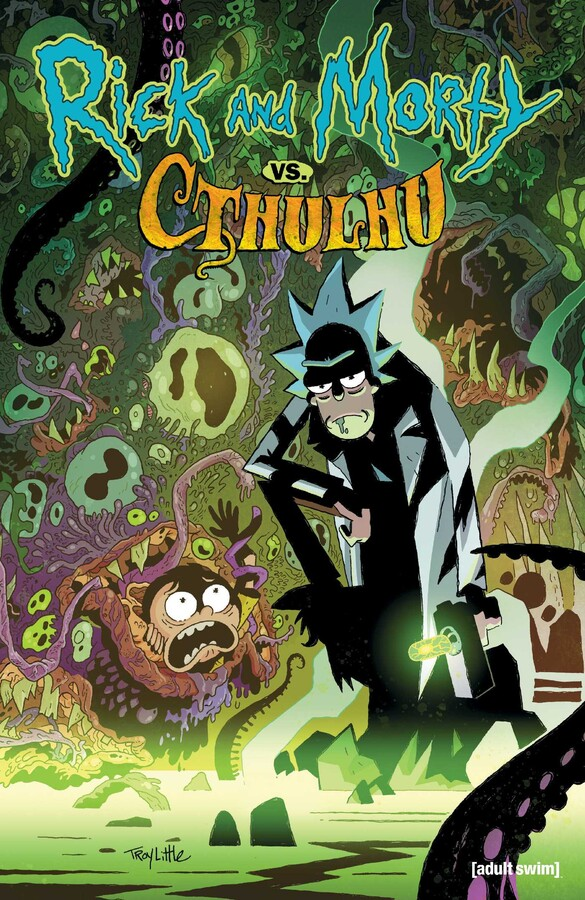